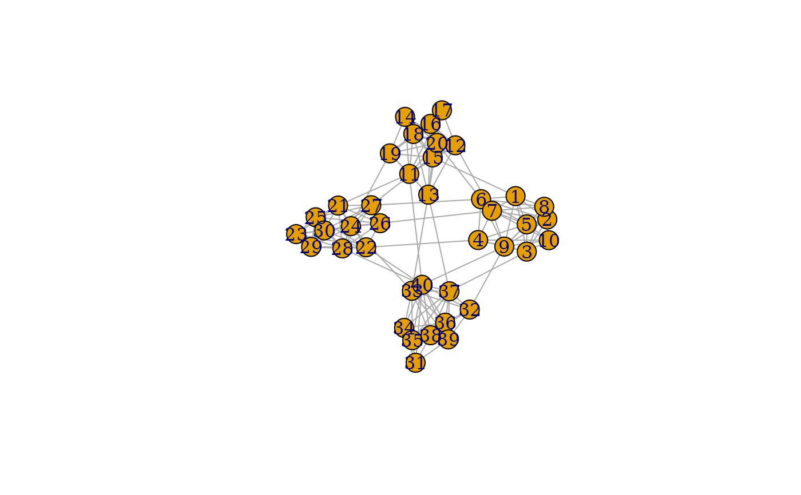

This set of graph creation algorithms simulate the topology by, in some way, connecting subgraphs. The nature of their algorithm is described in detail at the linked igraph documentation.
play_blocks(n, size_blocks, p_between, directed = TRUE, loops = FALSE) play_blocks_hierarchy(n, size_blocks, rho, p_within, p_between) play_islands(n_islands, size_islands, p_within, m_between) play_smallworld( n_dim, dim_size, order, p_rewire, loops = FALSE, multiple = FALSE )
| n | The number of nodes in the graph. |
|---|---|
| size_blocks | The number of vertices in each block |
| p_between, p_within | The probability of edges within and between groups/blocks |
| directed | Should the resulting graph be directed |
| loops | Are loop edges allowed |
| rho | The fraction of vertices per cluster |
| n_islands | The number of densely connected islands |
| size_islands | The number of nodes in each island |
| m_between | The number of edges between groups/islands |
| n_dim, dim_size | The dimension and size of the starting lattice |
| order | The neighborhood size to create connections from |
| p_rewire | The rewiring probability of edges |
| multiple | Are multiple edges allowed |
A tbl_graph object
play_blocks: Create graphs by sampling from stochastic block
model. See igraph::sample_sbm()
play_blocks_hierarchy: Create graphs by sampling from the hierarchical
stochastic block model. See igraph::sample_hierarchical_sbm()
play_islands: Create graphs with fixed size and edge
probability of subgraphs as well as fixed edge count between subgraphs. See
igraph::sample_islands()
play_smallworld: Create graphs based on the Watts-Strogatz small-
world model. See igraph::sample_smallworld()
Other graph games:
evolution_games,
sampling_games,
type_games
